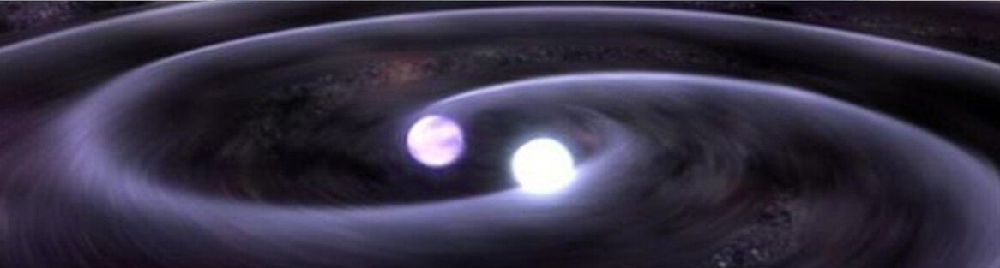
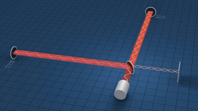
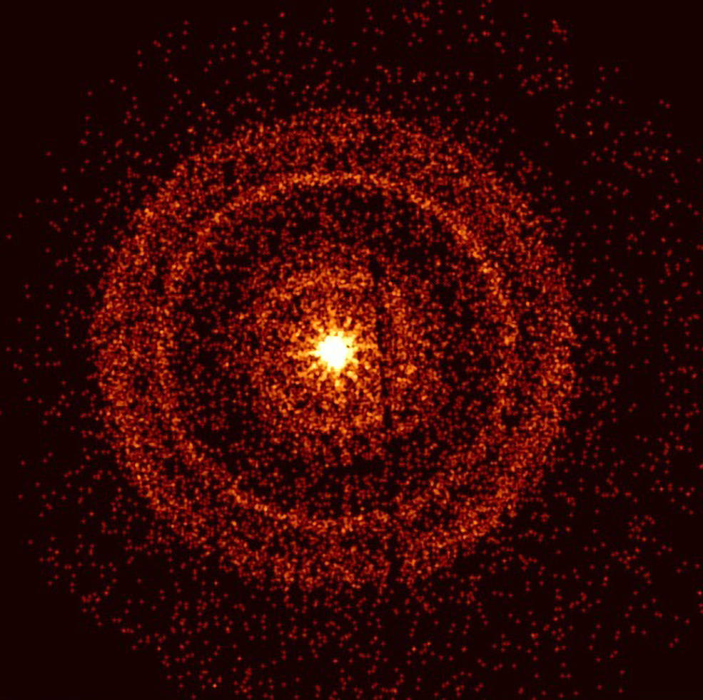
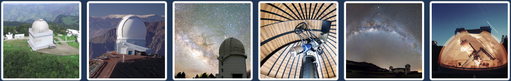
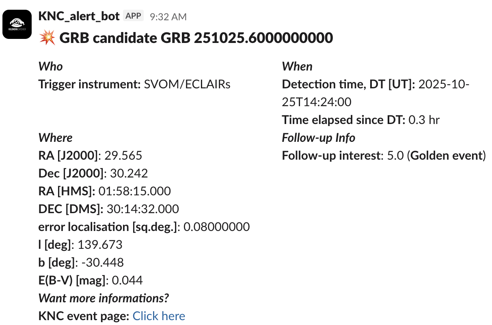
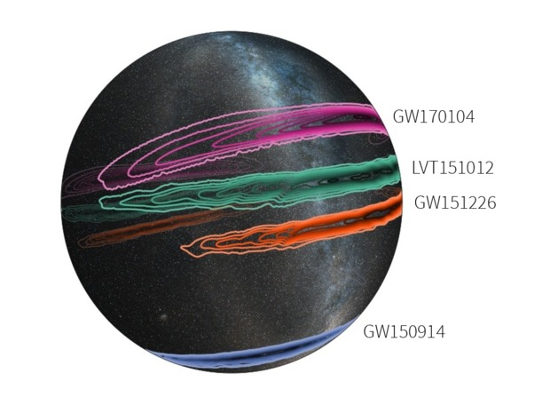
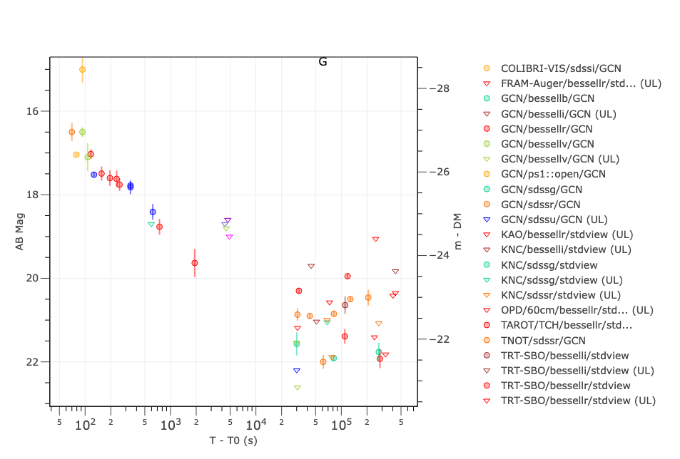
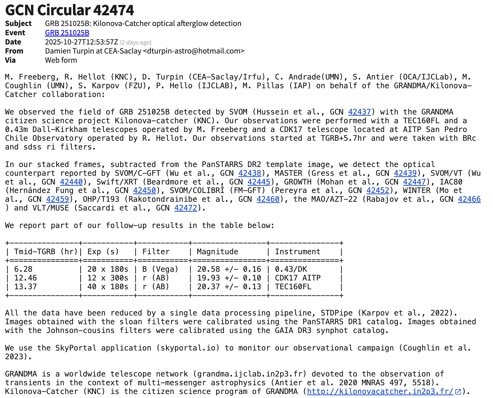

the grandma citizen science website on gravitational wave astronomy.
supported by GRANDMA and université de paris.
Kilonova Catcher
Kilonova Catcher is a trigger-based telescope network, created in partnership with the GRANDMA Collaboration, that invites amateur astronomers to participate in rapid-response astrophysical research. Unlike survey programs that continuously scan the sky, we respond to alerts for specific transient events. Our primary science program focuses on kilonovae from neutron star mergers, but we also observe short gamma-ray bursts (sGRBs) and their multi-wavelength afterglows, occasionally interesting X-ray transients, and Type Ia supernovae. This trigger-based approach means you're capturing rare cosmic events as they unfold - sometimes within moments of detection. KNC receives its own alerts and can operate independently, but the presence of the GRANDMA Collaboration - a professional network - helps us identify which events are most promising. This unique partnership means Kilonova Catcher volunteers aren't just following along. They are a critical component of rapid-response astronomy, capturing rare cosmic events as they happen!
How we work

Act I: The Alert System
Understanding the Science Behind the Alerts
Gravitational Wave Detection: Listening to Spacetime
When compact objects like black holes or neutron stars spiral together and merge, they create ripples in spacetime itself. We call them gravitational waves. These waves travel across the universe at the speed of light, stretching and squeezing space by incredibly tiny amounts. To detect them, scientists use kilometer-scale instruments called interferometers, including LIGO (two detectors in the United States), Virgo (in Italy), and KAGRA (in Japan).
These detectors use laser beams split along two perpendicular arms to measure changes in distance smaller than the width of a proton. When a gravitational wave passes through, it slightly changes the length of one arm relative to the other, creating a detectable interference pattern. From the signal's shape and evolution, scientists can estimate the distance to the source, the masses of the merging objects, and the type of system (two black holes, two neutron stars, or a mixed pair).
When an event is detected with high confidence, an automated alert is received by KNC within minutes through the LIGO-Virgo-KAGRA network of GW detectors. This alert includes a preliminary sky map showing the most probable location of the source — often a large region — and key properties like distance and likely object types. Hours later, refined analyses improve these estimates, helping observers prioritize their targets. All those within the transient community can report their findings live with NASA's General Coordinates Network (GCN) as the hunt begins!
To go further:
- LIGO – How do we detect GWs? [video]
- How does an interferometer work? [video]

A demonstration of how a passing gravitational wave disturbs the lasers in a Michelson Interferometer, generating the interference pattern that tells us about the wave's properties.Credit: LIGO/T. Pyle
Multi-Messenger Alerts: Our Science Targets
KNC operates as a trigger-based network, responding to alerts from multiple detection systems. Our primary science program focuses on kilonovae — the optical counterparts of neutron star mergers detected through gravitational waves. But we cast a wider net, combining information from multiple cosmic messengers to maximize our ability to localize and characterize each event. All alerts received by the KNC platform are curated for our astronomers to ensure a high discovery potential.
Kilonovae (Primary Program): When two neutron stars or a neutron star and black hole merge, they can eject neutron-rich material that glows for days to weeks. These events are our primary focus as they forge heavy elements like gold and platinum, provide insight into physics in extremely dense environments, and offer the rare opportunity to observe gravitational wave sources directly.
Short Gamma-Ray Bursts & Afterglows: Compact object mergers can also launch powerful jets that release enormous energy in seconds — a short gamma-ray burst — followed by multi-wavelength afterglows that fade over hours to days. KNC receives direct alerts from satellites like Swift-BAT, allowing us to begin observations within minutes and track the evolving afterglow across optical and infrared wavelengths.
Neutrinos: Neutrinos are ghostly, nearly massless particles produced in some of the universe's most energetic events. They travel across the cosmos almost undisturbed, carrying information that light and gravitational waves alone cannot provide. While KNC does not observe neutrinos directly — they require specialized underground detectors, not optical telescopes — neutrino alerts from facilities like IceCube can help us triangulate where to look. Combined with gravitational wave sky maps and gamma-ray detections, neutrino signals help the broader community narrow the search region and identify the most promising targets for optical follow-up.
This is the power of multi-messenger astronomy: no single signal tells the whole story. By combining gravitational waves, gamma-ray bursts, and neutrino detections, we build a complete picture of where an event occurred and what produced it — and that's exactly where KNC's telescopes come in.

NASA's Neil Gehrels Swift Observatory captured the afterglow of GRB 221009A about an hour after it was first detected on October 9, 2022. The bright rings form as X-rays scatter off dust layers within our galaxy in the direction of the burst.Credit: NASA/Swift
GRANDMA Partnership: Global Coordination
GRANDMA (Global Rapid Advanced Network Devoted to the Multi-Messenger Astronomer) is a worldwide collaboration of photometric and spectroscopic facilities with dedicated time for transient alerts. The consortium includes approximately 25 telescopes across 20 observatories, spanning a dozen countries. During observing run O3, wide-field systems covered roughly 1000 deg² to magnitude 18 (and 100 deg² to magnitude 22) in a single night, while deeper instruments reached magnitude 23 for photometry and magnitude 22 for spectroscopy. In other words, the GRANDMA collective is capable of focusing high power observatories on 60-72% of the night sky with just 24 hours advance notice.
Kilonova Catcher is led by professional astrophysicists based in the USA and France (you can learn more about our team on the About page!) - who work in close partnership with the GRANDMA collaboration. We share the same gravitational wave alert infrastructure, enabling KNC to respond to events the moment they are detected. GRANDMA and KNC leadership work in tandem with KNC members worldwide, offering timely guidance on: which alerts matter most, why certain events are scientifically significant, and where potential discoveries may be unfolding. This close exchange ensures that volunteers don’t just contribute data - they understand the science behind every observation they make!
To go further:
- First six months of O3 with GRANDMA [publication]
- Multi-messenger astrophysics & the GRANDMA generation [publication]
- GW astronomy with GRANDMA & KNC [video]

Observatories that are a part of the GRANDMA professional telescope network.Credit: GRANDMA Collaboration
Act II: Your Role
What You Do as a KNC Observer
Equipment You Need
The most important aspect of contributing to KNC is having equipment capable of producing scientifically useful data. Your observations need to stand alongside data from professional telescopes, which requires meeting certain minimum standards.
Minimum required equipment:
- Telescope: 8" (200mm) aperture or larger, mounted on a tracking equatorial or alt-azimuth mount with goto capability
- Camera: CMOS, CCD, or DSLR camera capable of producing FITS files (preferred) or high-quality RAW images
- Calibration frames: Bias, dark, and flat-field frames to remove camera artifacts and ensure your data is scientifically reliable
- Plate solving: Software or online tools that identify exactly where your telescope is pointed — essential for confirming you've captured the right target
Recommended but not required:
- Filters: Standard photometric filters (r, i bands preferred for kilonovae; clear or luminance filters acceptable for rapid sGRB response)
- Local astronomy club connection: A great way to access equipment, share skills, and find observing partners
- Remote or automated setup: Allows faster response to alerts, especially overnight
Just getting started? Don't worry! Our members and scientists have contributed guides to help you get there. We have an array of recommended equipment and software lists available for those looking to get their setup ready. KNC provides hands-on support and the community is always willing to help newcomers troubleshoot — many members learned these techniques specifically to participate in the project.
Target Selection & Priority
When an event is detected, KNC publishes observer-ready target information on our platform: via Slack and email! This includes precise coordinates (RA/Dec), detection time, visibility windows for different locations, suggested filters and exposure times, and - critically - why the event is scientifically interesting. We provide context: Is this a high-probability neutron star merger? A rapidly fading gamma-ray burst afterglow? An unusual X-ray transient?
For particularly high priority events, KNC leaders and scientists from GRANDMA coordinate observation efforts, including those of Kilonova Catcher volunteers. This is to ensure coverage of important events and avoid unhelpful duplication.
Each target is assigned an interest score (0-5 scale) to help you decide where to direct your efforts:
- Score 0-1: Low priority; observe only if you have nothing else to do
- Score 1-2: Worth checking if conditions are favorable
- Score 2-3: Scientifically interesting; prioritize high-probability regions
- Score 3-4: Very promising; respond quickly
- Score 4-5: Golden opportunity; drop everything and observe!
For kilonovae, time is crucial in the first 24-48 hours when the optical emission peaks. A delayed reaction time of minutes to hours can make the difference between detection and missing the event entirely.

An example of a gold GRB event released to the KNC slack. Conversations regarding this event occur in a seperate #observations channel.Credit: KNC PI - Dr. Damien Turpin
Observing Strategy
When an alert comes in, KNC members decide whether to observe — and KNC leaders are always on hand to flag the events of greatest scientific interest and explain why they matter. Once you've decided to observe, here's how to get started:
- Make your calibration frames first! Bias, dark, and flat-field frames ensure your data is scientifically reliable before you even point at the sky.
- Point your telescope to the posted coordinates and begin imaging.
- Filter choice: For most targets, start with r or i-band filters, which are optimal for detecting kilonovae and many transients.
- Exposure strategy: Use relatively short, repeatable exposures — typically 60 to 180 seconds depending on your aperture — and take multiple images to improve signal-to-noise ratio and catch cosmic rays or artifacts.
- Document everything: Record your filter, exposure time, camera gain or ISO, observing conditions (seeing, transparency, moon phase), and perform plate solving if possible. This metadata is essential for scientific analysis.
- Move fast: For kilonovae and sGRB afterglows, the first few days matter most. Begin observing as soon as physically possible.
KNC members don't work in isolation. We have dedicated Slack channels for every step of the process. In #observations, astronomers discuss exposure durations, filters, and imaging parameters in real time as each event unfolds. There are also channels for troubleshooting, general questions, and community discussion — a place to swap tips, share results, and connect with fellow Kilonova Catchers around the world. KNC scientists are active across time zones at most hours (we try our best!), so feel free to tag us anytime.
Remember: Even non-detections are scientifically valuable. If you observe a field and don't see anything, that places important limits on how bright the source could be — helping narrow the search for other observers and constraining theoretical models.

This three-dimensional projection of the Milky Way galaxy onto a transparent globe shows the probable locations of the three confirmed LIGO GW events. The outer contour for each represents the 90 percent confidence region; the innermost contour signifies the 10 percent confidence region.Credit: LIGO CalTech
Data Upload & Calibration
After your observing session, it's time to prepare and submit your data. We prefer FITS files (the scientific standard format) organized by target ID, along with your calibration frames — bias, dark, and flat-field images. Calibration happens in two steps, and understanding the difference matters:
Step 1 — Image pre-processing (done by you): This converts your raw images into science-ready images by correcting for instrumental and optical effects. This step requires the calibration frames you took during your session. Don't worry if it sounds daunting; many of our members learned it specifically to participate, and the community is here to help.
Step 2 — Astrometry (we handle this): This transforms your science-ready images from detector coordinates into precise celestial coordinates using external tools and star catalogs. If you can't perform plate solving locally, simply upload your images and our automated pipeline takes care of it.
We provide step-by-step guides in multiple languages — because our members span five continents, and science should be accessible to everyone. Our global community also helps us continue expanding these resources, with members contributing translations and support in their own languages:
- Astronomer guide — English / Français / Español / Deutsch / العربية
- KNC GW observing guidelines
New to these techniques? KNC offers tutorials, example datasets, and troubleshooting support. The Slack community is welcoming and patient — and with members active across time zones, help is rarely far away.
Act III: The Impact
What Happens Next & Your Scientific Legacy
Professional Analysis
KNC and GRANDMA scientists will combine the data you upload with observations from professional telescopes to create a comprehensive picture of each event — a light curve showing how the source's brightness evolves over time.
Your images are processed through professional data-reduction pipelines that handle calibration, astrometry, and photometric analysis. This allows us to measure the precise brightness of objects in your images. Scientists build light curves showing how brightness changes over time, compare observations with theoretical models, and check consistency with the gravitational wave or gamma-ray burst properties. Your measurements help confirm or rule out potential counterparts and inform follow-up strategies for subsequent nights.
This isn't just a one-way process. While the science team handles the technical analysis to ensure results are scientifically robust, KNC actively trains members to learn these techniques themselves. Over time, participants can evolve from image capture to active involvement in data reduction and scientific analysis — becoming true collaborators in the research process. We are also currently developing new pathways for participants without telescopes to engage directly with one of astronomy's biggest scientific challenges: making sense of the enormous data streams that next-generation observatories will produce. Interested in getting involved with image analysis? Let us know when you Contact Us!

A light curve from a KNC-observed event, showing how source brightness evolves over time across multiple observers.Credit: KNC / GRANDMA
Publication & Co-authorship
When Kilonova Catcher volunteers' observations enable or contribute to significant discoveries, the results are shared with the global astronomy community through the General Coordinates Network (GCN). This is NASA's real-time communication system for cosmic transients like gamma-ray bursts and gravitational-wave counterparts. GCN circulars distributed to thousands of astronomers worldwide ensure that your observations immediately inform additional follow-up and analysis.
In the last two years, many peer-reviewed publications have included KNC volunteers as co-authors. This professional honor reflects the genuine scientific value of the contributions made by these individuals. When a volunteer's images help confirm a kilonova, constrain a gamma-ray burst afterglow, or place meaningful upper limits on source brightness, their contributions are recognized — with their name appearing on papers published in top astrophysics journals, cited by scientists worldwide.
Are you interested in being named as a co-author? High-quality observations, timely submissions, and scientifically meaningful data will put you on the path to making the kinds of contributions that get you there. When you are in the right place at the right time, your role in the discovery will be recognized. In the meantime, join our community of Kilonova Catchers, learn all you can about making high-quality observations, and get to know people worldwide who share your passion for chasing massive collisions and understanding the universe.
KNC volunteers have already contributed to breakthrough discoveries and been recognized alongside professional astronomers for their role in advancing our understanding of the universe. The following publications came directly from this effort — volunteer co-authors are listed in bold:

Success! KNC volunteers have observed and detected an event. We published a GCN circular and notified the community of our findings!Credit: KNC GCNs
- "Limits on the Ejecta Mass During the Search for Kilonovae Associated with Neutron Star-Black Hole Mergers." arXiv:2503.15422, 2025.
- "Early-time Observations of SN 2023wrk: A Luminous Type Ia Supernova with Significant Unburned Carbon in the Outer Ejecta." The Astrophysical Journal, Vol. 973, No. 2, 2024.
- "Ready for O4 II: GRANDMA Observations of Swift GRBs during Eight Weeks of Spring 2022." Astronomy & Astrophysics, Vol. 682, A160, 2024.
- "GRANDMA and HXMT Observations of GRB 221009A." The Astrophysical Journal Letters, Vol. 948, No. 2, 2023.
- "Multi-band analyses of the bright GRB 230812B and the associated SN2023pel." arXiv:2310.14310, 2023.
But, what's the big picture?!
The universe doesn't wait. When gravitational waves ripple through spacetime, we have only days - sometimes hours - to capture the kilonova before it fades forever. The gamma-ray burst afterglow follows soon after. Every second counts.
That's where you come in. When gravitational waves are detected, the search region can span hundreds of square degrees of sky. Professional observatories can't cover that area alone!
Your telescope. Your images. Your rapid response. They fill gaps in global coverage, catch transients during critical early phases, and provide the distributed cadence needed to track rapidly evolving events. Amateur astronomers through KNC have already contributed to publications!
Beyond individual discoveries, you're building something revolutionary: a global rapid-response network that represents a new model for how science can be done. Professional and amateur astronomers working side by side, complementing each other's strengths, democratizing access to frontier research.
Kilonova Catcher is Expanding! We are also currently developing new pathways for participants without telescopes to engage directly with one of astronomy's biggest scientific challenges: making sense of the enormous data streams that next-generation observatories will produce.
You're proving that meaningful scientific contributions requires something we are all capable of: dedication, curiosity, and a willingness to learn!
Ready to join?
Explore more or get started!